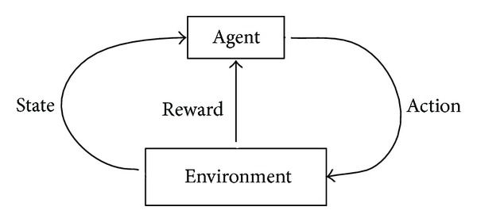
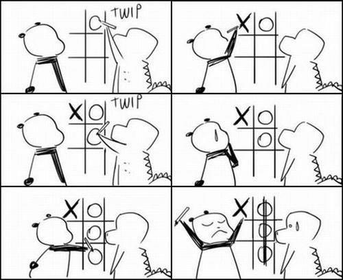
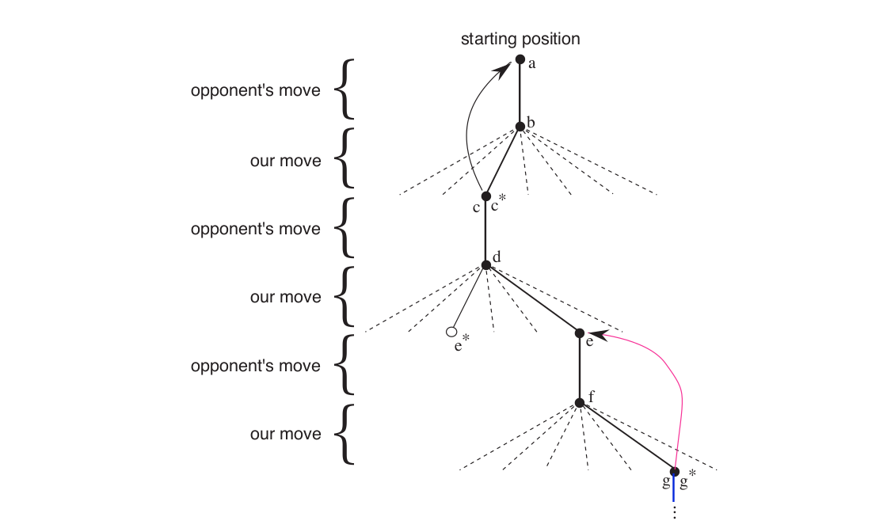

In the previous post I gave an introduction to RL and exlpained very briefly how things are and why is it any different from other machine learning methods. In this post we will go through some examples and try to formalize the idea of RL.
The following digram depucts the working of a reinforcement learning agent precisely.

We know that RL is based on rewards and punishements. A lot of complexities could arise when an agent tries to maiximize the reward in a certain situation. To obtain a lot of reward, a reinforcement learning agent must prefer actions that it has tried in the past and found to be effective in producing reward. but in order to have knowledge about such actions, it has to explore it’s options. Some of them can be the first time our agent will be applying those options and other might be repeated. So basically, an agent has to explore and exploit the already explored actions in order to find a solution. The dilemma is that none of the two can be pursued exclusively without failing at a particular task. The agent must try a variety of actions and progressively favor those that appear to be best.
Unlike other paradigms of Machine Learning, RL explicitly takes the whole problem into account. An RL agent should be able to sense the state of the enviornment and also be able to influence it. The whole point being that the interaction between the agent and environment should be maximum. There can be cases when RL is used in conjunction with supervised learning. Those cases mostly arise when we want eliminate non-critical capabilities of an agent.
Examples
Now that we know a little more about RL, where can we use it? Let’s consider some examples to understand The above theory:
A chess player decides to make a move. His decision is addressed by anticipating possible counterattacks and by intuitive judgment of the desirability of particular move.
OpenAI’s Dota 2 bot is a very recent and excellent example. Success in Dota requires players to develop intuitions about their opponents and plan accordingly. Bot developed by OpenAI has learned — entirely via self-play — to predict where other players will move, to improvise in response to unfamiliar situations. Also, how to influence the other player’s allied units to help it succeed.
An Finanacial broker sells his stocks only when he/she can see the possibilty of profit. He/she analyzes the previous data and considers possible shift in the prices of the stocks. Then try to optimize the financial objective overall.
A mobile robot decides whether it should enter a new room in search of more trash to collect or start trying to find its way back to its battery recharging station. It makes its decision based on the current charge level of its battery and how quickly and easily it has been able to find the recharger in the past.
All the above examples signify one thing i.e., interaction between the agent and it’s environment despite uncertainity. The agent has to monitor it’s environment frequently in order to keep the interaction maximum. This interaction helps in gaining experience which can improve performance over the course of time.
Elements of Reinforcement Learning
In the previous post we saw that there are certain elements to RL: - Policy - Reward - Value function - Model of the environment
One by one, we’ll take a look what the above elements mean. 1. Policy
A policy defines the agent’s behaviour at a given time in a certain environment. In simple terms, we can think of policy as response by the agent to a certain situation. Usually, a policy is represented by a function. We will look at different policy functions and it’s stochastic nature while learning value iterations.
Reward Signals
The name speaks for itself. Every time the agent takes an action, the environment responds back with a numerical digit called reward and it defines the track towards goal. A reward at a particular step would mean correct action and a punishment would mean wrong step. Therefore, rewards can be considered as the primary basis for altering policy. If a policy results in low rewards for actions then it can be changed in order to generate more reward for the same kind of action progressilvely.
Just like policies, reward signals can also be stochastic.Value Function
We saw that reward signal specifies whether an action is good or bad for a time step. But what if we want to see if it’s the long run? That’s where value function comes into play. A value of a state can be considered as the total amount of reward an agent can expect to accumulate over the future. The sole purpose of estimating values is to maximize reward. Without any dependency on rewards, it doesn’t really make much sense.Model
A model depicts the behaviour of the environment. For example, given a state and action, the model might predict the resultant next state and next reward. In simpler terms, model can used for planning the course of action after considering possible future situations. Note that Models are optional. There can be a model-based RL or a model-free RL.
Tic-Tac-Toe
Let’s get our focus on a single example and contrast RL with other approaches. For the sake of convinience, I’ll take an easy game of tic-tac-toe.
A skilled player plays so as never to lose. If not, then what’s the point? Let us assume that we are playing against an imperfect player, one whose play is sometimes incorrect and allows us to win. For simplicity, we will consider draws and losses equally bad.

This seems not much of a complicated problem but for once, what if we applied approaches other than RL?
- Let’s say we apply minimax method from game theory. It would be difficult to apply that in this case because it assumes a particular way of playing by the opponent. Minimax player would never reach a game state from which it could lose. In fact it will always win from that state because of incorrect play by the opponent.
- One can also apply dynamic programming to optimize the results. But the problem posed here is that it requires as input a complete specification of that opponent, including the probabilities with which the opponent makes each move.
Even though the first point is totally out of the picture now, we’ll see that the second method is not really any different from some of the RL methods.
An approach to play tic-tac-toe using RL
Let’s say we have a table of numbers, one for each state of the game. Each number will be the latest estimate of the probability of our winning from that state. We call this estimate as value. A state will be considered better than the other only if the probablity of winning is higher in that state.
Initially, we set values of all states to 0.5, representing a guess that we have a 50% chance of winning.
To select our moves we examine the states that would result from each of our possible moves and watch out the values in the table.
We will follow a greedy approach now. What I mean to say is that we will select the moves that will lead us to a higher value state or we can say the state with higher probability of winning.
Sometimes we make a exploratory random move because they cause us to experience states that we might otherwise never see.

© Sutton & Barto
In the above diagram, the solid lines represent the moves made during a game. The dashed lines represent moves that the agent considered but did not make. Second move was an exploratory move. It was taken even though another move, the one leading to e∗, was ranked higher. One thing to note is that exploratory moves do not contribute towards learning of an agent. The curved arrows that lead a state backwards are the backup arrows. While our agent is playing a game, we need more accurate estimates of a state. In order to do this, we backup the value of the state after each greedy move to the state before the move. By doing so, we update the value of the previous state to be closer to the next state.
Let s denote the state before the greedy move, and s` the state after the move, then the update to the estimated value of s, denoted V(s), can be written as
V(s) ← V(s) + α[V(s`) − V(s)]α is a small positive fraction called the step-size parameter. If this parameter is manipulated correctly over time to converge to an optimal policy then our agent could perform well against opponents who change the style of playing in between the games.
Everything’s fine but what’s the significance of this simple example? This example illustrates the differences between evolutionary methods and methods that learn value functions. There is a clear emphasis on learning while interacting with an environment, in this case with an opponent player. Also, there is a clear goal, and correct behavior requires planning and anticipation that takes into account delayed effects of opponent’s choices.
I’ll be implementing a minimal source code to of the above example once we learn few RL algorithms.
The thing about RL is that it isn’t just limited to low level system. We can apply it to a high level architecture and make it do a lot more. There have been numerous development over the years in this segment